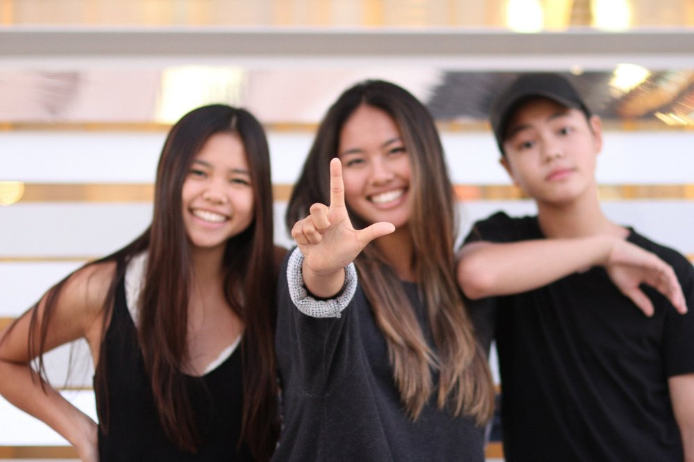
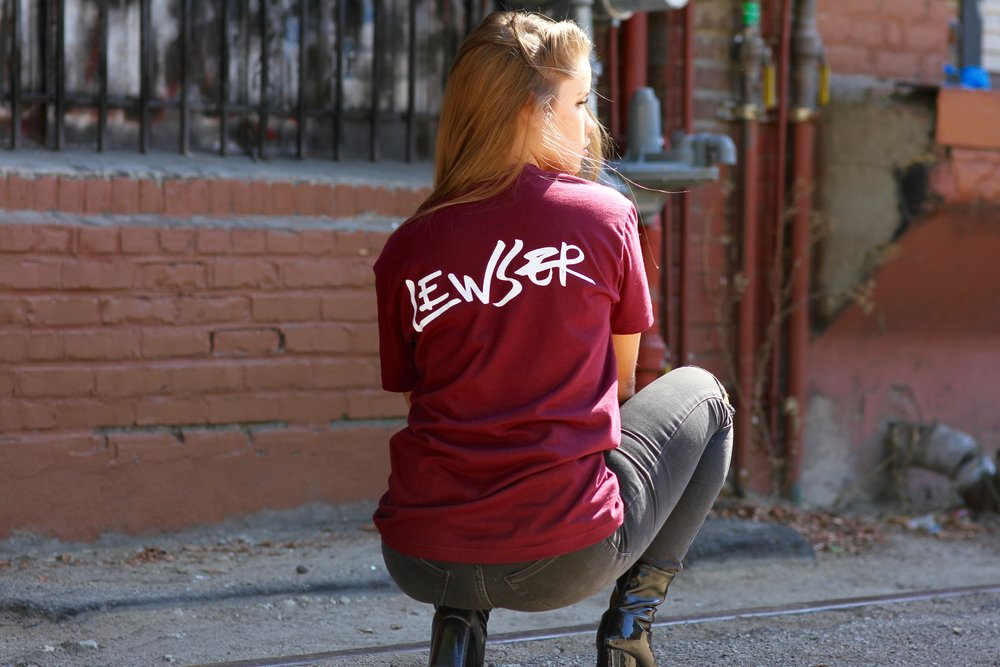

L E W S E R
Keep Creating.

Lewser is created by Sarah, Serris, and Sean Lew. Derived from their last name and the word “loser”, Lewser became a playful nickname for the Lew siblings.
Lewser is built by the bond that brings these three together. Lewser is both a creative outlet for them to express their artistic ideas and a way for them to come together as one. Fueled by the love and support they have for one another, Lewser emphasizes the importance of family. They not only support one another but also aspire to push and inspire each other through their individual accomplishments.
The Fangirl In Me
Lewser. After becoming one, I didn’t feel like a “loser” although it sounded like it. Lewser is the fandom of Sean Lew stans. Sean Lew is a well-known dancer in Los Angeles, California. Aside from being a dancer, he is also a chef, singer, actor and a choreographer. So with all the talents he obtained, who would not admire him? Well, maybe it is easy for me to say it since he is a dancer and I am also fond of dancing. But the reason why I admire him is not only limited to that.
Sean Lew inspires me. He once said: “It’s what you do in the dark that puts you in the light.” Those words made me realize that if you believe you have the talent, never think twice on showing it. His positive personality encourages me to keep on doing what I like and keep on liking what I do. And now, it has been a year since the day I became a Lewser. In just a year, I have discovered so many things about myself. I have also made new friends because of Sean Lew.
But do you know what is the greatest thing I got from being a Lewser? Sean Lew taught me to stop focusing on how stressed my life is and to always remember how blessed I am.
